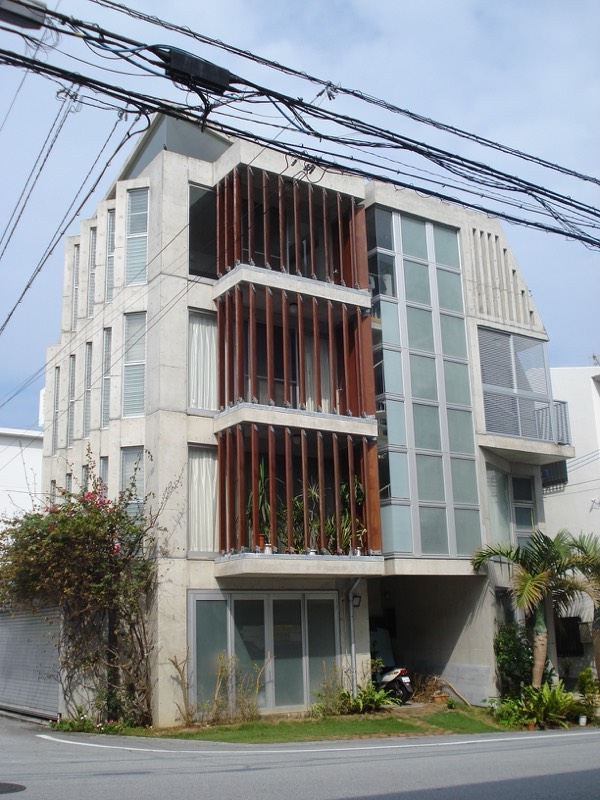

どのようなご計画ですか？
タクト設計は、保育園・こども園などの施設と、個人住宅の設計を柱としています。ご計画に合わせてご覧ください。

保育園・こども園・福祉施設の方へ
園舎の建て替え・増築・改修から、補助金スケジュールへの対応まで。県内14件の設計実績があります。
詳しく見る →
住宅をお考えの方へ
土地探しから設計・工事監理まで。沖縄の気候に合う、長く快適に暮らせる住まいをご提案します。
詳しく見る →店舗・オフィス・公共施設の設計もご相談いただけます。実績を見る →
保育園・こども園・福祉施設の設計
平成13年から令和3年まで、沖縄県内の保育園・こども園を14件手がけてきました。新築だけでなく、増築・改修・厨房改修まで。子どもたちの安全と保育のしやすさ、そして運営の続けやすさを軸に設計します。
県内14件の実績
那覇・宜野湾・浦添・うるま・豊見城の各市で、本園・分園・認定こども園の設計監理を担当してきました。
運営を止めない増改築
園を開けたまま進める増築・改修の実績があります。保育動線と安全を確保した工程を計画します。
補助金・行政手続きに伴走
整備補助のスケジュールに合わせた工程計画から、建築確認申請などの手続きまで一貫して対応します。
- 愛の園保育園
- スカイマリン保育園（本園）
- さつき保育園
- ひまわりっ童保育園
- おなが保育園
- スカイマリン保育園（分園）
- メルシー保育園古島
- もりのこ保育園
- 座安こども園（厨房改修工事）
- 上間さつき保育園
住宅の設計
強い日差し、心地よい風、そして台風。沖縄で長く快適に暮らすための住まいを、敷地の個性と暮らし方から設計します。構造はRC造・木造・鉄骨造・混構造まで、敷地条件とご要望に合わせてご提案します。
土地探しからご一緒に
敷地の形状・法規制・風の通り方は設計を大きく左右します。購入前の土地のご相談も承ります。
構造にとらわれない提案
RC造・木造・鉄骨造・混構造。コストと暮らし方のバランスから、最適な構造を選びます。
新築もリノベーションも
二世帯住宅、増改築、リノベーション。いまの住まいを活かす選択肢も含めてご提案します。
- H邸（木造・二世帯住宅）
- N邸（RC造・中庭住宅）
- K邸（混構造・海を望む住宅）
設計実績
掲載している写真は実績の一部です。用途や規模の近い事例は、お打ち合わせの際にご案内しています。
このほかの実績：防災避難施設整備工事・設計監理（平成25年完成・那覇市）／（株）的エンタープライズ本社（平成18年完成・中城村）ほか
沖縄の光と風を、建築に込めて
一級建築士事務所タクト設計は、沖縄県那覇市を拠点に、保育園・こども園、住宅、店舗、公共施設など幅広い建築の設計監理を手がけています。
沖縄の自然と時間が
穏やかに流れる建築を。
「タクト」とは、指揮者が振る指揮棒のこと。お客様の想い、敷地の個性、つくり手の技術。それぞれの声を聞き取り、ひとつの建築へとまとめあげていく。その役割への想いを事務所の名前に込めています。
1984年に建築の道へ進んだ一級建築士・羽地敏博は、1991年にタクト設計を設立。以来、亜熱帯の気候風土を熟知した設計で、快適で長く愛される空間をご提案しています。

| 名称 | 一級建築士事務所タクト設計 |
|---|---|
| 代表 | 一級建築士 羽地敏博 |
| 所在地 | 〒900-0004 沖縄県那覇市銘苅３丁目１９−１ |
| TEL | 098-860-1227 |
| 登録 | 沖縄県知事登録 一級建築士事務所 |
| 設立 | 1991年（建築実務は1984年〜） |
| 業務内容 | 建築設計・工事監理（保育園・こども園・福祉施設、住宅、店舗、公共施設） |
| 対応エリア | 沖縄県全域（離島を含む） |
ご依頼の流れ
保育園・福祉施設の場合は、整備補助・行政のスケジュールに合わせた工程計画からご相談いただけます。
お問い合わせ・ご相談
お電話またはフォームからご連絡ください。ご相談は無料です。建築のお悩みやご要望をお聞かせください。
無料相談ヒアリング・敷地調査
暮らし方や運営のかたち、ご予算、敷地の条件を丁寧にお伺いし、現地調査を行います。
基本設計・プラン提案
ヒアリングをもとに間取りや外観をご提案。納得いただけるまで打ち合わせを重ねます。
実施設計・確認申請
詳細な設計図面を作成し、建築確認申請などの行政手続きを行います。
施工・工事監理
設計意図が現場に正確に反映されるよう、品質・工程・コストを第三者の立場で監理します。
竣工・お引き渡し
完成検査を経てお引き渡し。その後のメンテナンスや増改築のご相談にも対応します。
アフターフォローよくあるご質問
設計料はどのように決まりますか？
建物の用途・規模・工事内容によって異なるため、ご相談内容をお伺いしたうえで個別にお見積もりします。初回のご相談は無料です。費用が発生する段階では、必ず事前にご説明します。
土地探しの段階から相談できますか？
可能です。敷地の形状・法規制・周辺環境は設計に大きく影響するため、購入前の敷地についてのご相談も承っています。建築の視点から土地選びをお手伝いします。
対応エリアはどこまでですか？
沖縄県内全域に対応しています。那覇市を拠点に、宜野湾市・浦添市・うるま市・豊見城市などで実績があり、宮古島市など離島の設計実績もあります。
保育園・こども園の補助金や行政手続きにも対応できますか？
対応します。保育園・こども園の設計実績は14件あり、整備補助のスケジュールに合わせた工程計画や、建築確認申請などの行政手続きを含めてお手伝いします。
園を運営しながらの増築・改修は可能ですか？
可能です。てんがんこどもえんの増築、座安こども園の厨房改修など、運営を続けながらの工事実績があります。保育動線と安全に配慮した工程を計画します。
相談から完成までどのくらいかかりますか？
規模や用途によって異なりますが、住宅の場合は設計・確認申請に6ヶ月〜1年、工事に6ヶ月〜1年程度が目安です。施設の場合は補助金・行政のスケジュールも踏まえて計画します。まずはご希望の時期をお聞かせください。
お問い合わせ
ご相談は無料です。「まだ計画の途中」という段階でも、お気軽にご連絡ください。
お電話でのご相談
098-860-1227受付：月〜金 9:00–18:00（土日祝は事前予約にて対応）
- Office
- 一級建築士事務所タクト設計
- Address
- 〒900-0004 沖縄県那覇市銘苅３丁目１９−１